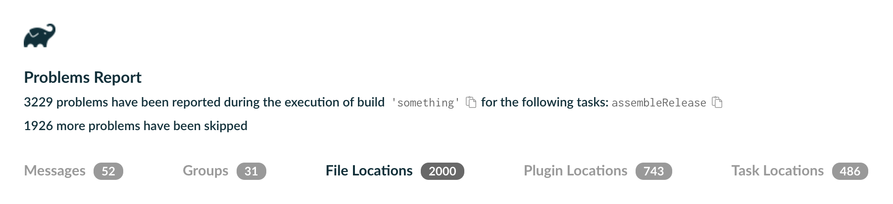

Gradle 9.7.1 is the first patch release for Gradle 9.7.0. (released 2026-08-19).
The following issues were resolved:
Option annotation arguments in a different order than before in build.gradle.ktsWe recommend upgrading to Gradle 9.7.1.
In this release, the Isolated Projects performance feature graduates from experimental to incubating, bringing safe parallel project configuration and tools to help you migrate your build.
This release also enhances the Configuration Cache, where tasks gain access to higher-level dependency resolution APIs, Java agents and TestKit work better together, and a source of spurious invalidation when used from IntelliJ IDEA was removed.
When your build fails during IDE import or sync, Gradle now returns a partial model through Resilient Sync, so your IDE keeps offering code completion, navigation, and highlighting for the parts of the build logic that are healthy, instead of leaving you with all-red scripts and no assistance while you track down the problem.
Test reporting and execution now surfaces framework-initialization failures for TestNG, JUnit 4, and JUnit Platform in the console by default, and supports the new way of controlling parallelism in TestNG 7.10 and later.
In CLI, logging, and problem reporting, Gradle now shows a source location for up to 2050 problems per build, up from 50, so the console, problems report, and Tooling API pinpoint many more issues.
Security and infrastructure improvements make trusted PGP keys easier to document and signing-key rotations easier to spot, while build authoring gains custom archive timestamps along with several new APIs for build and plugin authors.
Finally, performance improvements let file system watching work with a custom project cache directory, and dependency management previews improved dependency resolution ordering.
We would like to thank the following community members for their contributions to this release of Gradle: Adam, Aman Gautam, Aman Kumar, Anton Dubrouski, Aurimas, gbhavya07, Josh Friend, nicklauslittle-gov, Pragati, project516, Qin Mi, Ravi, sk-reddy17, Suvrat Acharya, Yongshun Ye.
Be sure to check out the public roadmap for insight into what's planned for future releases.
Switch your build to use Gradle 9.7.1 by updating the wrapper in your project:
./gradlew :wrapper --gradle-version=9.7.1 && ./gradlew :wrapper
See the Gradle 9.x upgrade guide to learn about deprecations, breaking changes, and other considerations when upgrading to Gradle 9.7.1.
For Java, Groovy, Kotlin, and Android compatibility, see the full compatibility notes.
Isolated Projects is a performance feature that safely runs project configuration in parallel, significantly reducing configuration time in many scenarios, including IDE sync and CI builds.
Before running any task, Gradle must complete the configuration phase. The Configuration Cache lets repeated build invocations skip this phase entirely, but any other invocation configures every project, which is a noticeable cost in large builds. This includes IDE sync, where the configuration phase cannot be cached.
Isolated Projects accelerates the configuration phase. Today, it does so through parallelism: because each project is configured in isolation, sibling projects can be configured concurrently rather than sequentially. In the future, it will also configure projects incrementally, skipping the phase for any project whose configuration has not changed.
Isolated Projects can be enabled with a new flag --isolated-projects on the command line, or in the properties file:
# gradle.properties
org.gradle.isolated-projects=true
Enabling Isolated Projects can result in behavior changes; the documentation describes each one and how to avoid it.
Isolated Projects serves as the foundation for future scalability work, allowing for more parallelism and reuse of work in the configuration phase.
To keep builds reliable with added parallelism, project isolation must be enforced via new constraints applied to the build logic. The core principle is that the configuration logic of a project cannot touch the mutable state of other projects or the build. For instance, calling project(":other").tasks or gradle.extensions is not allowed. Upon detecting a violation of the constraints, Gradle will fail the build immediately.
Initially, builds may contain many violations, and Isolated Projects includes a Diagnostics mode that lets you discover them without compromising safety.
# gradle.properties
org.gradle.isolated-projects.diagnostics=true
During the migration period, it can be useful to relax constraints to evaluate the performance benefit specific to your build. It is possible to dangerously ignore the violations by treating them as warnings:
# gradle.properties
org.gradle.isolated-projects.dangerously-ignore-problems=true
Both additional flags require Isolated Projects to be enabled to take effect.
See the Isolated Projects Constraints chapter in the Gradle User Manual for more details.
In this release, the feature transitions from being experimental to incubating. It is ready for early adopters to try and share feedback.
Follow the migration guide to make your build compatible with Isolated Projects.
The legacy org.gradle.unsafe.isolated-projects property names are now deprecated and will be removed in a future release. They continue to work as aliases for now.
The feature is not enabled by default and is not yet recommended for production use. Your build and plugins will likely need changes to meet the safety requirements. Compatibility with Configuration Cache is also a prerequisite for Isolated Projects.
See the Isolated Projects documentation in the Gradle User Manual for more details.
Gradle provides a Configuration Cache that improves build time by caching the result of the configuration phase and reusing it for subsequent builds.
ResolutionResult is fully Configuration Cache compatibleA ResolutionResult may now be included directly as a task input when using Configuration Cache.
This provides easy access to convenience APIs on ResolutionResult, avoiding the need to traverse the dependency graph manually to access them. This is useful for tasks that want to analyze the resolved dependency graph structure without needing to download the associated artifacts (JARs). For example, a task that generates a report of all resolved dependencies (such as a license report or an SBOM) can use allComponents directly, or a task that verifies that no dynamic versions are used can inspect allDependencies without manually walking the graph from the root:
// Before
abstract class PreviousTask : DefaultTask() {
@get:Input
abstract val rootComponent: Property<ResolvedComponentResult>
@get:Input
abstract val rootVariant: Property<ResolvedVariantResult>
@TaskAction
fun execute() {
// No access to APIs on ResolutionResult, requiring manual graph traversal.
}
}
tasks.register<PreviousTask>("before") {
rootComponent = configurations.runtimeClasspath.flatMap { it.incoming.resolutionResult.rootComponent }
rootVariant = configurations.runtimeClasspath.flatMap { it.incoming.resolutionResult.rootVariant }
}
// After
abstract class NewTask : DefaultTask() {
@get:Input
abstract val resolutionResult: Property<ResolutionResult>
@TaskAction
fun traverse() {
// Access to convenience APIs on ResolutionResult.
resolutionResult.get().allDependencies
resolutionResult.get().allComponents
}
}
tasks.register<NewTask>("after") {
resolutionResult = configurations.runtimeClasspath.map { it.incoming.resolutionResult }
}
Previously, the root ResolvedComponentResult and ResolvedVariantResult needed to be extracted and included on the task separately.
TestKit lets plugin authors functionally test their build logic by running real builds with GradleRunner. A common setup attaches a Java agent to the build JVM, for example the JaCoCo coverage agent to measure code coverage of the plugin under test.
Previously, attaching a third-party agent with the Configuration Cache enabled was unsupported and could produce spurious Configuration Cache problem reports, forcing plugin authors to choose between coverage measurement and testing their plugin under the Configuration Cache.
The Configuration Cache now supports third-party -javaagent: attachments to the build JVM in regular daemon builds and in TestKit's default daemon mode:
# gradle.properties of the build under test
org.gradle.jvmargs=-javaagent:/path/to/jacocoagent.jar=destfile=build/jacoco/functionalTest.exec
Only agents attached at JVM startup are supported, and TestKit's embedded mode (withDebug(true)) remains unsupported; to debug the build under test, use -Dorg.gradle.debug=true and attach the debugger manually.
See the Third-party Java Agents with the Configuration Cache section in the Gradle User Manual for more details.
Gradle sets the idea.io.use.nio2 system property to speed up file I/O in the Kotlin compiler when compiling .gradle.kts scripts.
Previously, the property was set only when a build actually compiled scripts, so its value differed between builds that compiled scripts and builds that reused already-compiled ones. Because system properties read at configuration time are build configuration inputs, this alternation discarded otherwise reusable cache entries, which IntelliJ IDEA and Android Studio users saw as frequent unexplained cache misses:
Calculating task graph as configuration cache cannot be reused because system property 'idea.io.use.nio2' has changed.
Gradle now sets the property at the start of every build, so its value stays stable and the Configuration Cache entry is reused.
This resolves one of the most highly-voted Configuration Cache issues.
Gradle provides Tooling APIs that facilitate deep integration with modern IDEs and CI/CD pipelines.
When an IDE syncs a Gradle build, it queries tooling models through the Tooling API.
With resilient sync, Gradle builds and returns models for as much of the build as it can configure and reports the rest as structured failures, so an IDE can keep assisting you with the healthy parts of the build while you repair what is broken. In particular, Gradle can now provide:
buildSrc that configured successfully before a failure elsewhere in the build.Tooling API clients opt into this behavior by querying models through the incubating BuildController.fetch(...) method, which returns each model together with any failures encountered instead of aborting the operation.
In this release, a resilient sync reports the operation as failed when any part of it fails, so the reported build status is accurate, while the partial models are still delivered to the client's intermediate result handlers before the failure is raised.
Resilient sync is incubating. The resilient behavior is available in IntelliJ IDEA 2026.2.
See the Resilient sync section in the Gradle User Manual for more details.
Gradle provides a set of features and abstractions for testing JVM code, along with test reports to display results.
Gradle's test logging now surfaces test-framework startup failures from TestNG, JUnit 4, and JUnit Platform even when the default granularity would otherwise hide them.
Previously, when these frameworks failed to initialize (for example, when a TestNG test class threw an exception from its constructor, a JUnit 4 suite could not be started, or a Jupiter @BeforeAll lifecycle hook aborted a container) the failure was silently filtered out by the default granularity. Users would see only > There were failing tests and had to read the XML report to find the underlying cause:
> Task :test FAILED
> There were failing tests. See the report at: file:///.../build/reports/tests/test/index.html
FAILURE: Build failed with an exception.
These framework-startup failures now bypass the granularity filter and are always written to the console by default:
> Task :test
ExampleTest > initializationError FAILED
framework-startup org.testng.TestNGException: Cannot instantiate class ExampleTest
at org.testng.internal.ObjectFactoryImpl.newInstance(...)
...
The testLogging.events predicate still applies; explicitly silencing FAILED events is honored.
The new TestFailureDetails.isFrameworkFailure() predicate exposes this distinction to Tooling-API and Build-Scan consumers, who may render framework-startup failures differently from ordinary test failures.
See the Test logging section in the Gradle User Manual for more details.
threadPoolFactoryClass works with TestNG 7.10 and laterTestNG 7.10 replaced its thread-pool factory setter (setExecutorFactoryClass(String)) with a new API (setExecutorServiceFactory(IExecutorServiceFactory)). This release adds support for thread pool factories that implement this API on supported TestNG versions.
Gradle now detects which API the runtime TestNG version exposes and handles it accordingly:
org.testng.IExecutorServiceFactory.org.testng.thread.IExecutorFactory.The test task configuration remains unchanged; only the interface the user-supplied class must implement differs across TestNG versions:
tasks.named<Test>("test") {
useTestNG {
threadPoolFactoryClass = "com.example.MyExecutorServiceFactory"
}
}
Gradle provides an intuitive command-line interface, detailed logs, and a structured problems report that helps developers quickly identify and resolve build issues.
Gradle infers a problem's source location from a captured stack trace. Because capture is expensive, only the first 50 problems per build received one, so builds that report many problems (especially deprecations) left most of them without a file and line number.
In this release, the first 50 problems still get full stack traces. Past that cap, Gradle now uses a much cheaper capture to attach a source location to up to 2000 more problems, at negligible cost.
As a result, the console, the problems report, and the Tooling API show a source location for many more problems than before.

Run with --warning-mode=all to remove the limit and capture a source location for every problem. Past the cap, including under --warning-mode=all and fail, the capture keeps the originating build logic down to the calling script, enough to locate the problem, rather than the full call chain.
See the CLI reference in the Gradle User Manual for more details.
Gradle provides robust security features and underlying infrastructure to ensure that builds are secure, reproducible, and easy to maintain.
Gradle's dependency verification helps you mitigate security risks by ensuring downloaded artifacts match expected checksums or are signed with trusted keys.
Dependency verification metadata already lets you annotate checksums with origin and reason attributes to document where a checksum was obtained and why it is trusted.
Starting with this release, the same origin and reason attributes are also supported on the <trusted-key> and <pgp> elements, so you can record where a public key was verified (for example, the URL it was downloaded from) directly alongside the key:
<trusted-keys>
<trusted-key id="8756c4f765c9ac3cb6b85d62379ce192d401ab61"
group="com.github.javaparser"
origin="https://keyserver.ubuntu.com"
reason="Verified against the maintainer's website"/>
</trusted-keys>
These attributes are purely informational: Gradle preserves them across read/write cycles but never uses them during verification. Existing verification metadata files continue to be read without changes; files written by this version of Gradle use the new dependency-verification-1.4.xsd schema.
When dependency verification fails because an artifact was signed with a key that could not be found on any key server, it can be hard to tell whether you are pulling a brand-new dependency for the first time or whether a previously trusted dependency has had its signing key rotated.
Gradle now appends the number of other keys you already trust for the failing artifact to the message, distinguishing keys trusted for the specific group:module from keys trusted for the whole group:
> On artifact foo-1.0.jar (org:foo:1.0) in repository 'maven': Artifact was signed with key '14F53F0824875D73' but it wasn't found in any key server so it couldn't be verified (1 other key is already trusted for module 'org:foo'; 3 other keys are already trusted for group 'org')
A non-zero count is a strong signal that the signing key has been rotated rather than that you are trusting the module or group for the first time, making it easier to react appropriately. This note now appears in both the console output and the generated HTML verification report.
See the Verifying dependency signatures section in the Gradle User Manual for more details.
Gradle provides rich APIs for build engineers and plugin authors, enabling the creation of custom, reusable build logic and better maintainability.
Gradle produces reproducible archives by default, using fixed timestamps for all entries. However, some environments, such as those following the SOURCE_DATE_EPOCH specification, require a meaningful, verifiable timestamp rather than a fixed default.
Archive tasks now support a reproducibleFileTimestamp property that lets you set a custom timestamp for every entry in the archive:
import java.time.Instant
tasks.withType<AbstractArchiveTask>().configureEach {
reproducibleFileTimestamp = providers.environmentVariable("SOURCE_DATE_EPOCH").map {
Instant.ofEpochSecond(it.toLong()).toEpochMilli()
}
}
See the Timestamp for files inside archives section in the Gradle User Manual for more details.
ResolvedArtifactResultThe ResolvedArtifactResult.getAttributes() and ResolvedArtifactResult.getCapabilities() methods have been introduced to provide access to the attributes and capabilities of a resolved artifact without going through the ResolvedArtifactResult.getVariant() method. ResolvedArtifactResult.getVariant() is still available, but will be deprecated in a future release.
getInputStream() method on BuildCacheEntryWriterAuthors of custom BuildCacheService implementations can now obtain cache entry content as an InputStream via BuildCacheEntryWriter.getInputStream(), as an alternative to writing to an OutputStream via writeTo. Consuming an InputStream can be more efficient for I/O, especially for asynchronous HTTP clients.
DomainObjectCollection.getElements() returns a Provider<? extends Collection<T>> and acts as an important bridge between the Domain Object Collection and Provider APIs. This API is similar to the existing FileCollection.getElements() method.
The returned provider carries build dependencies, meaning dependencies carried by providers added via addLater and addAllLater are reflected in the returned elements provider:
val container = objects.domainObjectSet(MyType::class.java)
container.addLater(someProvider)
// Lazily access all elements as a Provider
val allElements: Provider<out Collection<MyType>> = container.elements
tasks.register("process") {
inputs.property("items", allElements)
doLast {
println(allElements.get())
}
}
See the Collections section in the Gradle User Manual for more details.
The Groovydoc task now supports Java toolchains, aligning it with GroovyCompile, Javadoc, and ScalaDoc. By default the task uses the project's configured toolchain, and it can also be configured per-task:
tasks.named<Groovydoc>("groovydoc") {
javaLauncher = javaToolchains.launcherFor {
languageVersion = JavaLanguageVersion.of(21)
}
}
As Groovydoc now runs in a separate worker process, a new incubating maxMemory property is available to control the heap size of that process for larger code bases:
tasks.named<Groovydoc>("groovydoc") {
maxMemory = "1g"
}
File/Dir properties on built-in tasksSeveral built-in Gradle task types and extensions now expose renamed lazy variants of file and directory properties that were originally declared with eager File getters.
Where previously you had to work around Javadoc.getDestinationDir(): File, War.getWebXml(): File, CreateStartScripts.getOutputDir(): File, and similar getters when composing lazy build logic, you can now configure destinationDirectory, webXmlFile, outputDirectory, and other lazy siblings directly.
The original eager getters remain as backward-compatible bridges so that existing builds need no changes, and the two getters share the same underlying state, so a value set through one is observable through the other.
tasks.named<Javadoc>("javadoc") {
// New lazy variant: wire from another provider without forcing eager evaluation.
destinationDirectory = layout.buildDirectory.dir("docs/javadoc")
}
Fourteen properties across Javadoc, Groovydoc, ScalaDoc, War, CreateStartScripts, GenerateIvyDescriptor, GenerateMavenPom, GroovyCompileOptions, JacocoTaskExtension, CodeQualityExtension, and ProcessForkOptions are covered.
The new lazy getters are incubating and their signatures may change in a future release.
See the Lazy file property variants on built-in tasks section in the Gradle User Manual for the full list.
Gradle continuously improves build performance through caching, parallelism, and reduced overhead across all phases of the build.
Generating the type-safe Kotlin DSL accessors for a project produces Kotlin source files. For some projects those files can be sizeable, but their generation is fast.
Storing and fetching those files adds its own overhead when the Build Cache is in use. That overhead alone is comparable to or higher than the cost of just regenerating the accessors. Gradle therefore no longer stores Kotlin DSL accessor generation in the Build Cache by default.
Builds that use a remote Build Cache will regenerate accessors locally instead of downloading them; in-build deduplication of accessor generation is unaffected. Kotlin DSL script compilation continues to be cached as before.
See the Type-safe model accessors section in the Gradle User Manual for more details.
File system watching lets Gradle skip work between builds by tracking file changes from the operating system. The project cache directory, by default .gradle/ in the root project, stores per-project state that Gradle reuses across builds.
Some teams move this state out of the project tree using --project-cache-dir or org.gradle.projectcachedir, for example to keep build state on a separate or faster file system, or to share a project across users on CI. Until now, doing so was incompatible with file system watching, so these users could not benefit from it.
Gradle has decoupled the two. File system watching works with any project cache directory location, including one on a file system that does not support watching:
$ ./gradlew build --watch-fs --project-cache-dir /custom/path
See the Excluding files and directories section in the Gradle User Manual for more details.
Gradle provides a flexible dependency management engine for declaring, resolving, and verifying the dependencies your build needs.
When Gradle resolves a configuration, the order of the resulting artifacts, such as entries on a JVM classpath, is determined by how the dependency graph is traversed.
Previously, dependency constraints participated in that traversal, so adding or updating a constraint (for example, from a platform or a lockfile) could unexpectedly reorder the classpath even though constraints contribute no artifacts of their own.
The new ENHANCED_GRAPH_ORDERING feature preview opts into the ordering behavior that will become the default in Gradle 10:
DEFAULT uses a standard breadth-first ordering, placing dependencies closer to the root earlier on the classpath. This option results in the most predictable dependency ordering.CONSUMER_FIRST traverses the graph topologically, sorting artifacts before those that they depend on.DEPENDENCY_FIRST is the reverse of CONSUMER_FIRST.All sort orders ignore constraint edges when traversing the resolved graph, so constraints no longer affect artifact ordering.
Enable this preview in your settings file to try the new behavior and report any issues before it becomes the default in Gradle 10:
// settings.gradle.kts
enableFeaturePreview("ENHANCED_GRAPH_ORDERING")
See the upgrade guide for more details.
Promoted features are features that were incubating in previous versions of Gradle but are now supported and subject to backward compatibility. See the User Manual section on the "Feature Lifecycle" for more information.
The following are the features that have been promoted in this Gradle release.
project() in DependencyHandlerproject(String) in DependencyHandlercreateProjectDependency() in DependencyFactorycreateProjectDependency(String) in DependencyFactoryThe Best Practices chapter grew significantly with guidance covering task authoring, lazy properties, dependency configuration, and CI hygiene:
Project instance from a task action for Configuration Cache compliance.map and flatMap to preserve task dependencies through Provider chains.@Incubating APIs carefully before adopting them in production build logic../gradlew on untrusted projects.The Configuration Cache chapter received a substantial pass this release, including a reorganised main page, expanded coverage of warn mode, refined guidance on BuildServiceParameters, a clearer explanation of how dependency resolution types interact with the cache, and improved Javadoc on the Configuration Cache classes themselves.
The following course is now available:
Known issues are problems that were discovered post-release that are directly related to changes made in this release.
We love getting contributions from the Gradle community. For information on contributing, please see gradle.org/contribute.
If you find a problem with this release, please file a bug on GitHub Issues adhering to our issue guidelines. If you're not sure if you're encountering a bug, please use the forum.
We hope you will build happiness with Gradle, and we look forward to your feedback via Twitter or on GitHub.